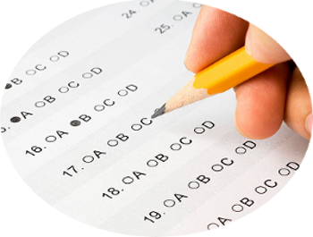

Benefits of Alternative Assesments
Different Types of Alternative Assements:
Portfolio Assessment
Authentic Assessment
Performance Assesment
Alternative Assessments are used to evaluate students' knowledge other than the traditional testing way.
Alternative Assessment is a lot more challenging to grade but it is worth it to see our students succeed!
THIS IS NOT THE ONLY WAY
TO ASSESE A STUDENTS
KNOWLEDGE!

Benefits of Alternative Assesmnets
- Alternative Assessments are not standardized, multiple choice, or norm-referenced.
- It gives students a chance to demonstrate their knowledge in a different light.
- Alternative Assessments is imperative because there are some students who do poorly in school solely because they are not good test takers.
- Alternative Assessments provide a means of assessing valued skills that cannot be directly assessed with traditional test.
- Alternative Assessments provide a more realistic setting for student performance than traditional tests.
- Alternative Assessments can easily be aligned with establishment of learning outcomes.
- Students become more engaged in the educational process and develop a more intimate understanding of the specific skills and critical knowledge being evaluated through Alternative Assessments.
Different Types of Alternative Assesments
Portfolio Assessment
- A Portfolio Assessment is a collection of student's work composed of observable evidence or products completed by students over time.
- Can be used to benchmark student's growth of learning and can monitor progress.
- This is a creation of work from a student that proves they gave effectively learned and understand the course material.
- It is most commonly a variety of the student's best work throughout the year followed by a reflection.
Authentic Assessment
- Authentic Assessment is a form of assessment in which students are asked to perform real-world tasks that demonstrate meaningful application of essential knowledge and skills associated with the real world.
- It reflects student learning, achievement, motivation, and even their attitude on instructionally relevant classroom activities.
- It will also shows determination and evaluation of objectives and concepts learned.
- Can be used to monitor progress.
- It shows students the significance of what they have learned and not only how it relates to the real-world but how to utilize it in the real-world.
Performance Assesment
- A Performance Assessment is used to demonstrate a student's knowledge and understanding of the material through a non-traditional method such as a project, activity, presentation, public speaking, multimedia presentation, etc.
- It requires students to do a task, such as, produce, demonstrate, perform, create construct, apply, build, solve, plan, show, illustrate, convince, persuade, or explain.
- This form of assessment is confirmation a student's has the ability to produce their own work.
- Performance Assessment is an excellent method for addressing skills in the higher levels of Bloom's Taxonomy.
WE WORKED WITH ALL STUDENTS! HOW CAN WE HELP YOUR STUDENT BEST?
To learn more about New York State Alternative Assessments go to: http://www.p12.nysed.gov/assessment/nysaa/